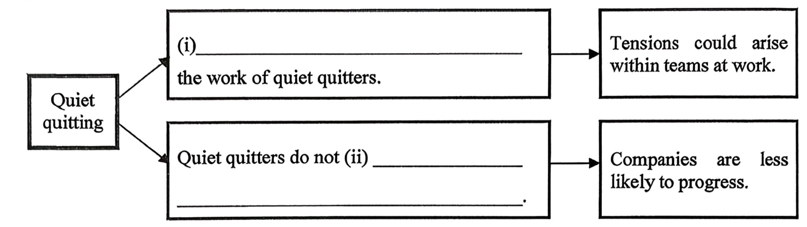

- 考试时间：1.5 小时
- Part A：必做，占 50% 分值
- Part B1 / B2：选做一个，占 50% 分值
- B1 较简单 · B2 较困难
- Part A：完整文章 + 题目 + 答案 + 正确率
- Part B2：完整文章 + 题目 + 答案 + 正确率
- Part B1：仅官方答案（文章/题目未收录）
- 附：官方考生表现分析 + 备考建议
[1] It's 2023 and Joe Jonas has filed for divorce from Sophie Turner after four years of marriage. Other personalities, including Taylor Swift and Joe Alwyn, Ariana Grande and Dalton Gomez, as well as Hugh Jackman and Deborra Lee all split up. In fact, so many high-profile pairs have called it quits that some people have deemed 2023 'The Year of Celebrity Breakups.'
[2] Logically speaking, we shouldn't be interested in this kind of scandalous speculation, this celebrity gossip. The inner lives of celebrities have next to nothing to do with us, after all: we're unlikely ever to meet them, and their romantic relationships have no bearing on how our own lives unravel, down here in the 'real' world. "And yet we are interested, even if we're reluctant to admit it," says Dr. Alice Leppert, a media and communications professor who focuses on stardom and celebrity culture.
[3] These public figures represent a lot of our highest goals, declares clinical psychologist and breakup coach Dr. Andrea Liner. They tend to be attractive, wealthy, and considered successful, which many people assume makes them invulnerable to a lot of life's problems. "So, when we find out that beautiful, gorgeous, wealthy celebrities are getting cheated on or divorcing or breaking up, it kind of humanizes them and can be validating for us to see that they have problems, too," she says. "But it can also confuse us because we think that they shouldn't be having problems like that if they've achieved these levels of success. Part of the problem is that celebrities may often perform an image or identity that doesn't always align with their authentic selves," she adds. Their marital problems can come as a shock if all the public saw was a happy family. Liner says that's especially true because celebrities share so much of their lives online, creating an "almost artificial sense of intimacy" that obscures what's happening behind the scenes.
[4] Gossip is so central to our cultural psyche that the American Psychological Association (APA) has its own definition. According to the APA, gossip consists of personal talk or communication about information that's often not proven to be true, and it may be (but is not necessarily) scandalous in content or malicious in intention. Gossip impacts group bonding and has big implications for the transmission and reinforcement of cultural norms, too.
[5] But why? What purpose does gossip serve? What function is it fulfilling in our society? Put simply, why do we care?
[6] "There are some people who try to classify gossip as negative or critical discussion about other people, but really, gossip is just sharing social information with each other," says author and professor of psychology Dr. David Ludden. "Anytime you're talking about people who aren't present, it's gossip," he says. "We're social animals and we need to be able to know what's going on in social environments, so gossip is very helpful," says Ludden, who studies the psychology of language and how it shapes and is shaped by our social world. Basically, gossip can help you go into social encounters more prepared for what's coming. "I don't have to have an encounter with someone directly to have some idea what they're like, because other people are telling me about their encounters with them," says Ludden.
[7] It can also be a way to build relationships: "Sharing gossip can bond people socially," says Dr. Stephen Benning from the University of Nevada, Las Vegas. Benning published a study in 2019 which found that gossip provides a currency of private information that creates a shared sense of the community holding that information. So, gossip is particularly compelling for people who are seeking to connect with others.
- [1] 引入：2023 名人分手年
- [2–3] 我们为何感兴趣（专家观点）
- [4] APA 对 gossip 的定义
- [5] 过渡：三连问
- [6–7] 八卦的社交功能
[8] But it's not all so innocent. Benning found that we're also attracted to gossip for some other reasons: attacking people's social standing and their position in social networks (what is called 'negative influence'), merely elevating our own social status, or simply trying to be included in a social network that we previously weren't. Similarly, Ludden says that "lots of the bad gossip is done in an attempt to make ourselves feel better than the person we're talking about, That's not a healthy approach to building a sense of self-esteem."
[9] Negative influence (talking badly about someone or trying to cut them down) was a clear motive for some people on certain occasions. Yet, the study found that this was actually the weakest motivation that led people to gossip. Gathering and validating information about the person being gossiped about was the strongest.
[10] There's also some evidence suggesting that negative gossip can have a positive impact on social groups and promote cooperation (though perhaps not in the most altruistic way). In an article published in the journal Psychological Science, researchers found that when people communicated reputational information about others (the researchers' definition of "gossiped'"), others tended to interact with people who were portrayed as cooperative and ostracize those who were portrayed as selfish. As a result, those who were ostracized tended to change their behavior and act more cooperatively.
[11] What motivates us to gossip about A-listers we don't socialize with?
[12] Ludden says that just because we've never met these celebrities doesn't mean we don't have relationships with them: "What we do is we create parasocial relationships — imaginary relationships with a singer or athlete whose successes we've followed and celebrated." Like gossip itself, these parasocial relationships can be healthy or unhealthy depending on the circumstances. They can fill the gaps in our real-world relationships, and they're a risk-free way to feel connected to others, since you can't be rejected by someone who's not actually in a relationship with you.
[13] Gossiping about these celebrities can be a similarly low-stakes way to feel connected, since the information you're sharing doesn't pose a risk to you or a member of your social circle. "It can feel uncomfortable and vulnerable to share information about your own worlds," Benning says. "Gossiping about celebrities is a safer way to interact with a date, to ingratiate yourself to a group at parties, or to feel part of a new team at work." It can also serve as a form of stress relief. "When life is overwhelming, focusing on celebrity gossip can be a way to numb out our feelings of dissatisfaction, unhappiness, or stress," says Benning. "Scrolling through celebrity gossip puts us in a dissociated state where we can take breaks from difficult feelings."
[14] But just like regular gossip, sometimes the motivation behind celebrity gossip is to make ourselves feel better than others. "Celebrity gossip is a safe way to snack on schadenfreude (the delight in the misfortune of others)," says Benning. "It feels a lot less shameful to admit we enjoy watching celebrity misfortunes than to admit we enjoy watching the misfortunes of family and friends."
- [8–9] 八卦的负面动机
- [10] 负面八卦竟能促进合作
- [11–12] parasocial relationships
- [13] 名人八卦 = 低风险社交
- [14] schadenfreude 幸灾乐祸
(i) The APA states all gossip is not supported by evidence. ✅ 64%
(ii) Some gossip may be harmful or upset people. ✅ 57%
(iii) Gossip is different in different cultures. ⚠️ 46%
(iv) Gossip doesn't play a role in developing relationships with others. ✅ 60%
[1] Quiet quitting is a buzzy term doing the rounds today. In fact, a Google search produces hits from The Washington Post, The New York Times, The Wall Street Journal, and countless academic publications. At this moment, at least 50% of the North American workforce is engaged in a wave of disengagement dubbed quiet quitting. But what does it mean and how will it impact university graduates as they prepare to embark on 21st-century careers?
What is quiet quitting?
[2] As many have noted the term itself is misleading. No, it does not refer to wordlessly slipping out the door or logging out of the group chat without so much as a peace sign emoji. Nor does it mean an employee permanently abandoning their post. Quiet quitters believe a more accurate way to describe this is working your contract or acting your wage. Carrie Bulger, PhD, a professor of organizational psychology, defines quiet quitting as "a renewed effort to really focus on what a job is and isn't."
[3] No matter what terminology we use, quiet quitting is less a harbinger of widespread revolt and more of a long overdue reckoning with outdated practices and stale office culture. "For some people, it's probably a sign of dissatisfaction and a sign that they're going to leave," Bulger said. "But I think for others, it's something else."
[4] Being forced to work at home amid the tumult of 2020 was an eye-opening experience, one that emboldened even the most dedicated employees to set healthy boundaries. And enforcing those boundaries can appear, through the lens of leadership, like slacking. "But it is quite possible to be invested in your work and redirect that passion once you clock out for the day. Pursuing work-life enrichment prioritizes self-care in one area and tends to breed success in the other," Bulger said.
Going against the grind
[5] The signs are all around us — productivity is no longer seen as the badge of honor it once was, and Generation Z are starting to question how relevant it is while seeking better frameworks that support the kind of life they want to live. Launched in 2013, one online community that exists for people who 'want help with their own work-life related struggles' saw an upsurge in followers in late 2021. The Instagram account The Nap Ministry has a similar popularity arc and saw a huge explosion of followers since the start of the pandemic, numbering in the tens of thousands per day. Tricia Hersey, its creator, believes Gen Z work hard; they just don't want to live to work. To her, and to many others, it is about "not running ourselves into the ground."
[6] Quiet quitting is only one note in this growing chorus, and we should be careful not to dismiss it as just another trend or a singular occurrence. Instead, we should step back and look at the whole picture and what that means for the way we've been working and how we should move forward.
- [1] 热词引入 + 数据
- [2] 定义：working your contract
- [3–4] 本质：对陈旧职场文化的清算
- [5] Gen Z 反内卷浪潮
- [6] 不是孤立现象
[7] There are, of course, divergent perspectives on quiet quitting. There's what it means for workers and what it means for panicked employers in a precarious economy, and the collision of those viewpoints can have drastic consequences for the former. Writing for The Wall Street Journal, columnist Callum Borchers outlined the perils of quiet quitting. Borchers has encountered a new term quiet firing in which reputations suffer as a result of perceived apathy; responsibilities are gradually diminished and a path toward actual termination materializes. "Companies have always had subtle ways to nudge people out the door," Borchers said. "Tactics include sidelining them by cutting responsibilities or denying promotions and raises to make someone miserable enough to leave."
[8] Gergo Vari, CEO of online job searching platform Lensa, also believes the decision won't serve employees long-term either. "Anytime that you silence your own voice in an organization, you may be depriving yourself of the opportunity to change that organization." Stepping away from hustle culture can also cause tension between employees and may result in a rift between fellow colleagues who may have to pick up the slack. "If people feel like their co-workers aren't committed to quality work there can be friction inside teams and organizations."
A generational divide
[9] Today's college students are rightly praised for their resiliency. But the same skills that made them so adaptable during the pandemic — they are digital natives who prefer Zoom lectures to the real thing — make them the target of generational disdain once they enter the workforce. Can't you just hear the grumbling: We wouldn't have to worry about quiet quitting if these kids would get off TikTok and do their jobs. Fittingly, the movement's origins can be traced to TikTok, the massively popular video-sharing app, where the influencer Zaid Khan uttered a phrase that's been quoted in countless news articles: "Your worth as a person is not defined by your labor."
[10] In an essay for The New Yorker, Cal Newport, an associate professor of computer science, posits that Gen Z is better equipped than its forebears to leverage technology to push back against workplace norms. Gen Z enters the workforce with "a mindset that is notably distinct from the millennials who preceded them," Newport writes. As the first group to fully come of age with smartphones and social media, Gen Z "formed an understanding of the world in which the boundaries between the digital and real are blurred." They have so thoroughly mixed work and self, the suffocating grimness of modern office life hits a more personal level and it has become clear to many that they need to separate their personhood from their jobs.
[11] Work, of course, remains essential within our current economic and social environment and trends like quiet quitting are inevitable during times of great upheaval. What we need to do is take a step back and take a critical look at how we can adapt the way we work to suit our current context while promoting a more modern and balanced way of life. As Barnaby Lashbrooke wrote in Forbes: "Of course we have to work: to put a roof overhead and food on the table. But life should come first, and work should be the enabler."
Comments:
Nikia203 · Figuring out how work fits into a life well lived is hard, but I think it's an evolution that has to happen. The question is what comes next.
Lewis43 · I'm not going to put in a sixty-hour workweek and pull myself up by my bootstraps for a job that doesn't care about me as a person.
Jessef04 · If you're doing this, you're a loser. This is like a virus. This is worse than COVID.
Luna903_ · I'd rather my kid was a quiet quitter than being unemployed just lounging about at home playing online games.
- [7] Borchers：quiet firing 的反击
- [8] Vari：对员工长期不利
- [9] 代际分歧 + TikTok 起源
- [10] Newport：Gen Z 善用科技
- [11] Lashbrooke：life first
- Comments：4 条读者评论（Q64）
Quiet quitting...
52. (i) No one today believes Gen Z are hardworking. ✅ 73%
(ii) Online groups helping people to review different aspects of their lives bloomed during the pandemic. ✅ 87%
(iii) The Nap Ministry's growth in its number of followers is unique. ⚠️ 54%
(iv) Tens of thousands of people complain about their jobs every day. ✅ 73%

- 总考生：49,293 人
- 约 42% 选考 Part B1
- 约 58% 选考 Part B2
- 近一半题目 ≥50% 考生答对 → 基础阅读能力普遍具备
- ≥70% 答对：Q1、Q3(i)(ii)、Q20(iii)(iv)
- 题型：MCQ / 简答 / 填空 / TFNG / 段落匹配 / 观点匹配
- Q20(ii)（Dr. Liner）官方已删除，原答案 Agrees
- ≥70% 答对：Q23(i)(iii)、Q25、Q29(ii)(iii)（第一篇指南基础题）
- 🚨 难点：Q26(ii) around 38% · Q30 happen naturally 仅 12% · Q32 同义词 6–15% · Q38 双要点仅 7%
- 细节题 ≥60%：Q43、Q51、Q52(i)(ii)(iv)、Q57(i)
- 全局理解题 37%–66%：Q63 匹配题
- 🚨 难点：Q59/Q60 需改写（抄原文 adaptable 不给分）· Q50/53/54/56/61 修辞指代区分度高 · Q44/45/62 开放题大段抄原文
严格按题目要求用原文指定段落的单词，注意单复数/时态/词性（humanizes 不是 humanize）
只在题目指定的段落范围内匹配，不要额外多选（Q21 限 ¶6–14）
抄词时核对拼写，避免词性错误改变意思（portrayed / overwhelmed）
不要大段抄原文，答出全部要求要点即可（Q44/45/62）
句子开头、填空上下文的词性要求都是线索（be + adj + to them）
需要 paraphrase 时调整代词、动词形式（Q59/60 用自己的话）